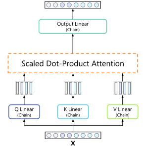
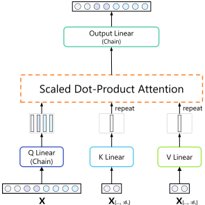
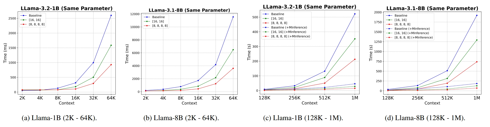
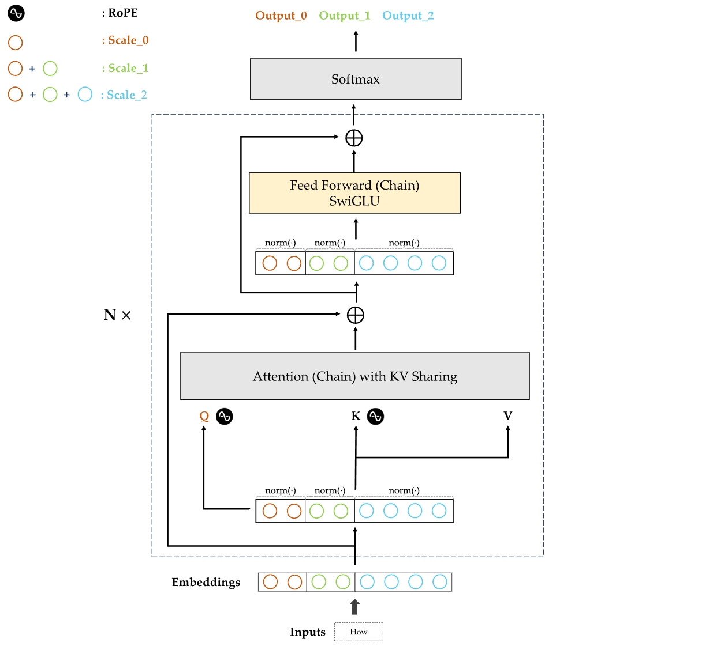

How CoLM Works: An Interactive Look
CoLM applies the chain principle to the core components of the Transformer architecture.
Chain-of-Representation (CoR) is the fundamental concept of CoLM. It formulates a standard representation as a concatenation of multiple "chains." Each chain is a sub-representation, and by activating a different number of chains, the model can operate at different "scales" of complexity and knowledge.
For example, activating only the first chain (Scale 1) uses the smallest version of the model. Activating the first two chains (Scale 2) leverages a larger, more capable model that builds upon the first. This structure is what enables a single trained CoLM model to provide multiple sub-models for elastic inference, a key advantage over standard architectures.
Chain-of-Linear
Causal, grouped connections.
Standard Linear
Dense, all-to-all connections.
Chain-of-Attention
Attention heads are partitioned into chains, maintaining causal structure.
CoLM-Air (KV Sharing)
Key/Value pairs are computed in the first chain and shared across all subsequent chains.
Competitive Performance, Unmatched Flexibility
CoLM delivers results on par with standard Transformers of similar size, proving that architectural flexibility and efficiency can be achieved without sacrificing performance.
The Breakthrough: Blazing-Fast Prefilling
By computing keys and values only in the first chain, our CoLM-Air variant radically accelerates the prefilling stage—a major bottleneck in long-context inference.
Achieve up to 27x faster prefilling speeds with MInference.
The Complete CoLM Architecture
This diagram illustrates the full data flow within a CoLM layer. It shows how embeddings are processed through chain-aware normalization, attention with KV sharing, and a chained feed-forward network to produce progressively refined outputs for each scale.
